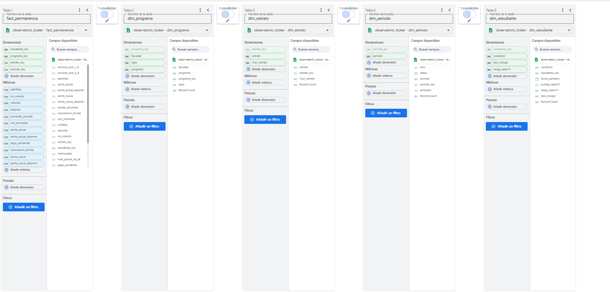

Reto 1 · ETL
De cinco archivos desordenados a una sola tabla confiable
Los datos llegan de cinco sistemas que no se hablan entre sí. El proceso los lee tal como vienen, los limpia, los cruza y deja listas las tablas del modelo. Como todo está en un script, se puede volver a correr cuantas veces haga falta sobre los CSV originales y siempre da lo mismo: 1.200 estudiantes en la cohorte 2025-1.
Cómo se ejecuta
pip install pandas openpyxl
python etl_observatorio.py carpeta_con_los_csv_originales carpeta_salidaEl script se detiene si algo no cuadra: por ejemplo, si la cohorte no da 1.200, si Moodle no trae 16 semanas por estudiante o si queda un registro de Bienestar sin estudiante.
Registro de transformaciones
Cada regla queda anotada con la etapa en que se aplica y cuántas filas tocó en la última ejecución.
| # | Etapa | Archivo | Problema | Regla | Filas |
|---|---|---|---|---|---|
| 1 | Extracción | todos | Archivos con BOM UTF-8 y celdas vacías | Leer como texto con codificación utf-8-sig; nada se modifica en el origen | 24.370 |
| 2 | Limpieza | sis_matriculas | Documento con puntos de miles (1.000.902.633) | Quitar puntos y espacios; el documento se trata como texto | 29 |
| 3 | Limpieza | sis_matriculas | Periodo escrito '2025-II' | Reemplazar por '2025-2' | 7 |
| 4 | Limpieza | sis_matriculas | Programa con nombres no estándar (ADMON EMPRESAS) | Homologar con la tabla oficial de programas | 139 |
| 5 | Limpieza | sis_matriculas | Promedio con coma decimal ('2,6') | Cambiar coma por punto y convertir a número | 40 |
| 6 | Limpieza | sis_matriculas | Promedio fuera de escala 0-5 (36 en vez de 3,6) | Si el promedio es mayor que 5, dividir entre 10 | 13 |
| 7 | Limpieza | sis_matriculas | Filas duplicadas | Conservar una fila por documento + periodo | 17 |
| 8 | Integración | sis_matriculas | Transferencias entrantes de 2025-2 mezcladas con la cohorte | Cohorte = periodo 2025-1 y tipo de ingreso 'Nuevo' (se excluyen transferencias) | 40 |
| 9 | Limpieza | admisiones | Admitidos duplicados (nombre repetido en MAYÚSCULAS) | Conservar una fila por documento | 30 |
| 10 | Limpieza | admisiones | Fecha en tres formatos (31/12/2024, 2024-12-31, 31-dic-2024) | Convertir cada formato a fecha (AAAA-MM-DD) | 687 |
| 11 | Limpieza | erp_pagos_2025_2 | Estado de pago con mayúsculas inconsistentes (PENDIENTE) | Unificar a Pagado / Pendiente / Anulado | 50 |
| 12 | Integración | erp_pagos_2025_2 | El ERP no compartía llave con el SIS (documento con puntos) | Cruzar por documento limpio; sin cruce = 'Sin liquidación' | 68 |
| 13 | Integración | moodle_actividad_2025_1 | Dos estudiantes comparten el mismo correo (32 filas mezcladas) | Asignar cada bloque de 16 semanas al código estudiantil según su posición, no por correo | 4 |
| 14 | Limpieza | moodle_actividad_2025_1 | Nota parcial en escala 0-100 | Convertir a escala 0-5 dividiendo entre 20 | 4.800 |
| 15 | Limpieza | bienestar_registros_2025_1 | Programa abreviado (Adm., Psico.) | Homologar con la tabla oficial de programas | 276 |
| 16 | Integración | bienestar_registros_2025_1 | Bienestar no registra documento y hay homónimos | Cruzar por nombre normalizado + programa homologado; los homónimos quedan separados por programa | 2 |
| 17 | Carga | bienestar_registros_2025_1 | Observaciones y atenciones psicológicas son datos sensibles | Se publican solo conteos de cancelaciones y alertas; nombres, observaciones y atenciones no salen de la zona protegida | 92 |
| 18 | Carga | todos | Documento, nombre y correo son datos personales | Reemplazar por una llave seudónima (hash) antes de publicar | 1.450 |
Reto 2 · Modelo dimensional
Un modelo estrella para filtrar por programa, facultad y estrato
Tabla de hechos: fact_permanencia (2.650 filas)
| Medida | Qué guarda | Aditividad |
|---|---|---|
admitido, en_cohorte | 1 si el estudiante fue admitido / se matriculó como nuevo en 2025-1 | Aditiva |
retenido, desertor | 1 si el estudiante de la cohorte se matriculó / no se matriculó en 2025-2 | Aditiva |
matriculado | 1 si estaba matriculado en ese periodo | Semiaditiva no se suma entre periodos |
creditos, accesos_sem_1_8, accesos_sem_5_8 | Créditos inscritos y accesos a Moodle | Aditiva |
con_promedio | 1 si el estudiante tiene promedio registrado (base del promedio de la cohorte) | Aditiva |
alerta_actual, alerta_nueva y sus versiones _desertor | 1 si la regla alertó al estudiante (y si además desertó) | Aditiva |
cancelacion_formal, alertas_docentes | Conteo de registros de Bienestar | Aditiva |
valor_liquidado, pago_pendiente | Liquidación 2025-2 y si sigue sin pagar | Aditiva |
promedio_periodo, nota_parcial_s4_s8 | Promedio del periodo y nota parcial (escala 0–5) | No aditiva se promedia |
| Absorción, retención, deserción, precisión, cobertura | Indicadores calculados como cociente de sumas | No aditiva |
Dimensiones
dim_estudiante
Llave seudónima, condición (cohorte o admitido no matriculado), tipo de colegio, puntaje y rango Saber 11, fecha de admisión.
dim_programa
Programa, sigla y facultad. Los datos no traían facultad, así que se asignó con la tabla institucional de programas.
dim_periodo
2025-1 (ingreso de la cohorte) y 2025-2 (primer seguimiento), con año y semestre.
dim_estrato
Estrato 1 a 6 y nivel socioeconómico (bajo, medio, alto).

Reto 3 · Arquitectura
Cómo viajan los datos, de los sistemas al consejero
La arquitectura objetivo mezcla un lago de datos por zonas con un almacén en BigQuery. Los sistemas académicos y financieros entran por lotes cada noche; la actividad de Moodle entra por streaming para que la alerta llegue casi en tiempo real.
Frecuencia de cada flujo
| Flujo | Tipo | Frecuencia |
|---|---|---|
| SIS Académico, Admisiones, ERP Financiero → zona Bronce | Lotes | Diaria (2:00 a. m.) |
| Bienestar → zona Bronce protegida → zona Plata seudonimizada | Lotes | Diaria; se anonimiza antes de salir de Bronce |
| Moodle (accesos y notas) → Pub/Sub → zona Bronce | Streaming | Eventos continuos, consolidados cada 5 minutos |
| ICFES Saber 11, SPADIES (MEN), DANE → zona Bronce | Lotes | Semestral / anual |
| Bronce → Plata → Oro → BigQuery (modelo estrella) | Lotes | Diaria; micro-lotes cada 15 minutos para las variables de Moodle |
| BigQuery → tablero Looker Studio | Consulta | Actualización de datos cada 15 minutos |
| Regla de alerta → consejeros (correo / Google Chat) | Evento | Casi en tiempo real + resumen semanal los lunes |
Por qué cada tecnología
| Componente | Tecnología | Justificación |
|---|---|---|
| ETL por lotes | Python + pandas (Cloud Run Jobs) | Es el mismo script del Reto 1: repetible, gratuito y fácil de auditar. |
| Ingesta en streaming | Google Pub/Sub | Recibe los eventos de Moodle en segundos y escala solo, sin servidores que mantener. |
| Data Lake por zonas | Google Cloud Storage | Guarda barato los archivos crudos y separa Bronce, Plata y Oro con permisos distintos. |
| Almacén / Lakehouse | BigQuery | Consulta con SQL tanto el lago como el modelo estrella y se conecta directo con Looker Studio. |
| Anonimización | Sensitive Data Protection (Cloud DLP) | Detecta y seudonimiza nombres y datos sensibles de Bienestar antes de la zona Plata. |
| Capa semántica | Vistas de BigQuery + campos calculados de Looker Studio | Cada indicador se define una sola vez y todos los tableros usan la misma fórmula. |
| Tablero | Looker Studio | Gratuito, con filtros de autoservicio y se puede embeber en esta página. |
| Canal de alertas | Cloud Functions + correo / Google Chat | Avisa al consejero en cuanto un estudiante cruza el umbral de la regla. |
Reto 4 · Tablero
Los indicadores, con semáforo y filtros en vivo
Use los filtros de programa, facultad y estrato para ver cualquier combinación, por ejemplo la deserción de Psicología en estrato 1.
¿No carga? Abrir el tablero en otra pestaña.
Metas y semáforo
Verde cumple la meta, amarillo está cerca y rojo está lejos. Los valores son los de toda la cohorte, sin filtros.
| Indicador | Valor | Meta | Amarillo | Estado |
|---|---|---|---|---|
| Absorción | 82,8 % | ≥ 85 % | 80 % – 85 % | Cerca |
| Retención de primer periodo | 85,4 % | ≥ 88 % | 85 % – 88 % | Cerca |
| Deserción | 14,6 % | ≤ 12 % | 12 % – 15 % | Cerca |
| Promedio de la cohorte | 3,38 | ≥ 3,50 | 3,30 – 3,50 | Cerca |
| Alertados (regla actual) | 371 | ≤ 120 | 121 – 180 | Lejos |
| Precisión de la alerta | 32,6 % | ≥ 50 % | 40 % – 50 % | Lejos |
| Cobertura de la alerta | 69,1 % | ≥ 60 % | 50 % – 60 % | Cumple |
Deserción por programa
| Programa | Facultad | Cohorte | Desertores | Deserción |
|---|---|---|---|---|
| Administración de Empresas | Ciencias Económicas y Administrativas | 254 | 46 | 18,1 % |
| Ingeniería Informática | Ingenierías | 236 | 39 | 16,5 % |
| Trabajo Social | Ciencias Sociales y Humanas | 152 | 22 | 14,5 % |
| Contaduría Pública | Ciencias Económicas y Administrativas | 154 | 22 | 14,3 % |
| Ingeniería Industrial | Ingenierías | 176 | 22 | 12,5 % |
| Psicología | Ciencias Sociales y Humanas | 228 | 24 | 10,5 % |
| Total cohorte | 1.200 | 175 | 14,6 % |
Reto 5 · Alerta temprana
Menos alertas, pero más certeras
La regla actual alerta a 371 estudiantes y los consejeros solo alcanzan a atender 120. Buscamos en Moodle de las semanas 1 a 8 la señal que mejor separa a quienes se van, y resultó ser la más sencilla: dejar de entrar a la plataforma en la segunda mitad del corte.
| Regla | Alertados | Alertados que desertaron | Precisión | Cobertura |
|---|---|---|---|---|
| Actual: nota parcial (s4 y s8) < 3,0 o 0 accesos en s7 + s8 | 371 | 121 | 32,6 % | 69,1 % |
| Nueva: accesos s5 a s8 ≤ 8 | 113 | 65 | 57,5 % | 37,1 % |
Matriz de confusión · regla nueva
Lo que gana la universidad
Con la regla actual, de cada 10 estudiantes que llama un consejero, 3 se iban a ir. Con la nueva son casi 6 de cada 10, y la lista cabe en la capacidad de atención (113 de 120).
El costo es que la cobertura baja: la regla nueva encuentra a 65 de los 175 desertores (37,1 %). Por eso la proponemos como la lista prioritaria, no como la única señal: la nota parcial sigue sirviendo para tutorías.
Cómo se eligió
Probamos umbrales sobre accesos acumulados, semanas sin entrar, caída de accesos entre la primera y la segunda mitad del corte, y combinaciones con la nota parcial. Las reglas con nota alertaban a muchos estudiantes que sí se quedaron; la de accesos de las semanas 5 a 8 fue la que más desertores encontró sin pasar de 120 alertas.
Reto 6 · Prospectiva tecnológica
Tres tecnologías para la siguiente fase
1. Modelo predictivo con BigQuery ML
- Problema del caso
- La regla actual alerta a 371 estudiantes con 32,6 % de precisión, y los consejeros solo atienden 120.
- Indicador que mejora
- Precisión y cobertura de la alerta.
- Riesgo
- Que el modelo discrimine por estrato o colegio, o que nadie entienda por qué alerta.
- Mitigación
- Usar modelos explicables (regresión logística), revisar la precisión por estrato cada semestre y dejar siempre la decisión final al consejero.
2. Gestión de datos maestros (MDM)
- Problema del caso
- No hay una llave común: Bienestar registra por nombre, dos estudiantes comparten correo y el ERP escribe el documento con puntos.
- Indicador que mejora
- Retención y deserción (exactitud de la cifra) y cobertura de la alerta, porque Bienestar y Moodle cruzan sin errores.
- Riesgo
- Que cada área siga usando su propia llave y el maestro quede desactualizado.
- Mitigación
- Un responsable de datos por área, el documento como llave obligatoria en todos los formularios y reglas de calidad automáticas en la zona Plata.
3. Learning analytics con xAPI y un LRS
- Problema del caso
- Moodle solo entrega accesos semanales; la alerta llega tarde y sin detalle de qué dejó de hacer el estudiante.
- Indicador que mejora
- Número de alertados y cobertura: se detecta antes y con más señales (entregas, foros, tiempo en curso).
- Riesgo
- Volumen alto de eventos y percepción de vigilancia por parte de los estudiantes.
- Mitigación
- Seudonimizar en la ingesta, guardar solo agregados después de un semestre e informar a los estudiantes para qué se usan sus datos.
Referencias · APA 7
Referencias
Armbrust, M., Ghodsi, A., Xin, R., & Zaharia, M. (2021). Lakehouse: A new generation of open platforms that unify data warehousing and advanced analytics. En Proceedings of the 11th Conference on Innovative Data Systems Research (CIDR). https://www.cidrdb.org/cidr2021/papers/cidr2021_paper17.pdf
Kimball, R., & Ross, M. (2013). The data warehouse toolkit: The definitive guide to dimensional modeling (3.ª ed.). Wiley.
Ministerio de Educación Nacional. (2015). Guía para la implementación del modelo de gestión de permanencia y graduación estudiantil en instituciones de educación superior. MEN.
Universidad Católica del Norte. (2026). [Título de la lectura o unidad 1] [Material del curso Introducción a la Inteligencia de Negocios]. https://fucn.instructure.com/courses/30440
Universidad Católica del Norte. (2026). [Título de la lectura o unidad 2] [Material del curso Introducción a la Inteligencia de Negocios]. https://fucn.instructure.com/courses/30440